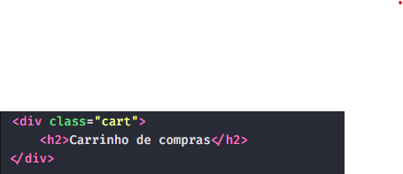
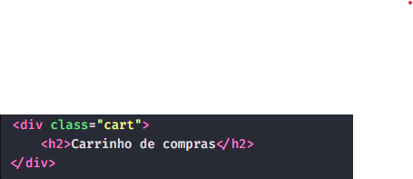

Um exemplo de uso do span é caso queira dar um destaque no texto, mas não queira usar a tag strong, algo parecido com:

Um exemplo do uso de div semântico:
Escrever HTML semântico é algo que leva tempo, e precisa de muita prática para fazer com que o HTML tenha a maior significado.
Temos dois elementos não semânticos para uso genéricos, um para bloco e outro para texto, sendo esses o div e o span.
Em ambas as situações nós usaremos atributos globais como id e class para entregar um maior significado.
O span é usado quando não se acha um elemento de texto semântico, já o div, quando não se acha um elemento de bloco semântico.
Um exemplo de uso do span é caso queira dar um destaque no texto, mas não queira usar a tag strong, algo parecido com:
Um exemplo do uso de div semântico:
